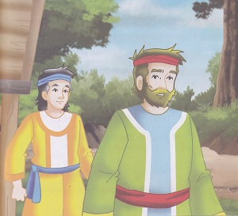
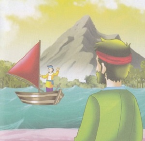
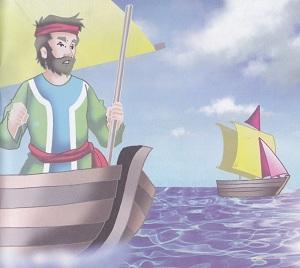
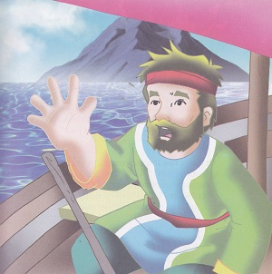
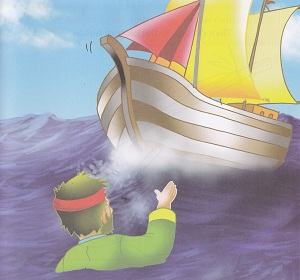

Legenda Batu Bagga
( Cerita Rakyat Sulawesi Barat )

Di suatu kampung pesisir Sulawsesi Barat, hiduplah seorang laki-laki paruh baya bernama Intobu, ia tinggal bersama anaknya yang bernama Impalak. Istrinya telah lama meninggal.
Mereka sangatlah miskin, hidup mereka hanya bergantung pada ikan dilaut. Impalak yang sudah dewasa pun berkeinginan memperbaiki nasib.

Dengan perasaan tak tega meninggalkan ayahnya, Impalak pun meminta izin kepada ayahnya untuk pergi merantau. Intobu tak dapat berbuat apa-apa, ia pun mengizinkan anaknya untuk pergi marantau. Impalak pun memutuskan untuk pergi berlayar menggunakan perahu Bagga (layar). Dengan harapan ia bisa mengubah nasibnya dan ayahnya.
Beberapa tahun kemudian ketika Intobu sedang mencari ikan di pelabuhan, ia melihat sebuah perahu Bagga sedang menuju ke pelabuahan. Saat perahu itu mulai mendekat, ia melihta seorang pria dengan seorang wanita yang cantik, yang ia yakin bahwa pria itu adalah ananknya yang kini telah berhasil di perantauan.
“impalak! Impalak! Anankku” teriak intobu dengan penuh semagat dari sampan kecilnya. Karena malu, impalak berpura-pura tak mendengar.
“Sepertinya orang tua itu memanggilmu, apakah dia ayahmu?” Tanya istri Impalak. Impalak tertawa mengejak, “Mana mungkin, ayahku sudah lam meninggal, dia itu orang sakit jiwa: ujarnya.
Sementara itu Intobu terus mengejar perahu Bagga milik Impalak sambil terus berteriak memanggil anaknya. Tiba-tiba sampannya tertiup angin kencang “Impalak tolong aku!” teriak Intobu, namun Impalak malah tertawa dan mengejek. Intobu sangat kecewa dan marah “Ku kutuk kau, dan perahu Baggamu jadi batu Impalak!”. Tiba-tiba angin besar meniup Impalak ke pesisir, seketika perahu Bagga dan seluruh awaknya berubah menjadi batu, yang kini disebut Batu Bagga.